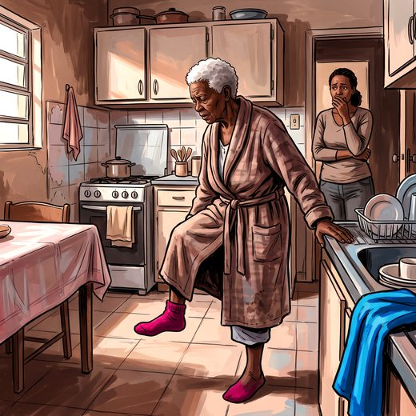

Ferramenta desta aula
Quedas — estratificação de risco. Roda no navegador, sem cadastro.
Consulta rápida à beira do leito
Condutas, doses e interações.
Referências da aula · 7
- Berg KO, Wood-Dauphinee SL, Williams JI, Gayton D. Measuring balance in the elderly: preliminary development of an instrument. Physiother Can. 1989;41(6):304-11.
- Berg KO, Wood-Dauphinee SL, Williams JI, Maki B. Measuring balance in the elderly: validation of an instrument. Can J Public Health. 1992;83(Suppl 2):S7-11. PMID 1468055.PubMed
- Duncan PW, Weiner DK, Chandler J, Studenski S. Functional reach: a new clinical measure of balance. J Gerontol. 1990;45(6):M192-7. PMID 2229941.PubMed
- Duncan PW, Studenski S, Chandler J, Prescott B. Functional reach: predictive validity in a sample of elderly male veterans. J Gerontol. 1992;47(3):M93-8. PMID 1573190.PubMed
- Vellas BJ, Wayne SJ, Romero L, Baumgartner RN, Rubenstein LZ, Garry PJ. One-leg balance is an important predictor of injurious falls in older persons. J Am Geriatr Soc. 1997;45(6):735-8. PMID 9180669.PubMed
- Montero-Odasso M, van der Velde N, Martin FC, Petrovic M, Tan MP, Ryg J, et al. World guidelines for falls prevention and management for older adults: a global initiative. Age Ageing. 2022;51(9):afac205. PMID 36178003. doi:10.1093/ageing/afac205.PubMedDOI
- Freitas EV, Py L, organizadores. Tratado de Geriatria e Gerontologia. 5ª ed. Rio de Janeiro: Guanabara Koogan; 2022.
Documentos oficiais
Leis e publicações do Ministério da Saúde sobre o cuidado da pessoa idosa, de acesso livre.
Abrir os documentos